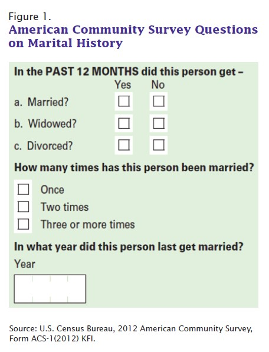

| Remarriage in the United States |
|---|
By Jamie M. Lewis and Rose M. Kreider
Issued March 2015
ACS-30
The context of marriage in the United States involves not only whether and when Americans choose to marry, but also how many times they marry. The majority of recent marriages are first marriages for both spouses. However, divorce rates are higher in the United States compared with European nations,1 and remarried adults have a higher likelihood of divorce than those in their first marriage.2
In 2008, a series of marital history questions were added to the American Community Survey (ACS). These items, shown in Figure 1, construct a history of marriage, divorce, and widowhood among respondents by recording: (1) whether adults had married, been widowed, or divorced in the past year; (2) how many times adults had married; and (3) the year adults most recently married. One of the strengths of ACS data is that estimates are available for sub-state geographic areas. Further, the ACS provides marital history data on adults of all ages whether they reside in households or group quarters. This report provides information on the following topics: (1) basic marital history measures by sex and age, (2) characteristics of adults by how many times they had married, (3) marital history information by sex and birth cohort, (4) the proportion of couples that include spouses who had married more than once, and (5) geographic variation in the percentage of adults who had married two or more times. In particular, it provides a look at both states and metropolitan statistical areas (MSAs) with relatively high or low proportions of men or women who had married at least twice.
This report, which uses 5-year data from the 2008–2012 ACS,3 presents the first detailed profile of this group provided with this level of geographic detail. Previously, marital history data were collected only in the Survey of Income and Program Participation (SIPP) and smaller ACS samples, which are too small to provide estimates at the MSA level.
1 See Gunnar Andersson, “Dissolution of Unions in Europe: A Comparative Overview,” MPIDR Working Paper, WP 2003-004, Max Planck Institute for Demographic Research, Rostock, Germany, 2003.
2 See Diana B. Elliott and Tavia Simmons, “Marital Events of Americans: 2009,” American Community Survey Reports, ACS-13, U.S. Census Bureau, Washington, DC, 2011.
3 See section on Source of the Data for background information on the 5-year ACS data and its interpretation.
Some highlights of the report are:
4 Individuals who responded to the question on race by indicating only one race are referred to as the race-alone population or the group that reported only one race category. This report will refer to the White-alone population as White, the Black-alone population as Black, the Asian-alone population as Asian, and the White-alone, non-Hispanic population as non-Hispanic White unless otherwise noted.
Table 1 provides a look at some basic measures of marital history by age and sex. A majority of adults aged 15 and over had ever married: two-thirds of men and 72 percent of women. Marital history does differ somewhat by sex, as women tend to marry earlier than men. For example, about 18 percent of women aged 20 to 24 had ever married, compared with 11 percent of men. Marital history is also shown for various age groups since it varies throughout the life course. For example, we would not expect many teens to be married. Indeed, when looking at older age groups, who have had more time to marry, we see that more had done so. For all age groups of women aged 30 and over, the majority had married, as had the majority of men aged 30 and over. Thus, despite concerns of a “retreat from marriage,”5 this life event continues to be pursued and achieved by most in America.
Although most Americans marry, they do not necessarily remain in a particular marriage for life. In addition to reviewing whether men and women ever marry, information on the number of times they marry and whether they are still in a particular marriage is important. About half of all adults aged 15 and over had married once: 50 percent of men and 54 percent of women (Table 1). There were 40 percent of men and 37 percent of women still in their first marriage, 13 percent of men and 14 percent of women had married twice, and 4 percent had married three or more times.6 Age is an important factor relating to remarriage, as older individuals have had more time to see a previous marriage conclude and to remarry.
5 See, for example, Daniel T. Lichter et al., “Race and the Retreat from Marriage: A Shortage of Marriageable Men?” American Sociological Review, 57(6):781–799, 1992; and Robert Schoen and Yen-Hsin Alice Cheng, “Partner Choice and the Differential Retreat from Marriage,” Journal of Marriage and Family, 68(1):1–10, 2006.
6 The estimates for men and women differ statistically.
The proportion of men and women married twice is about 20 percent or higher for men and women aged 50 to 69.
Comparing the data in Table 1 to previous reports sheds light on patterns of marital history over time. Previous census reports describe data from the 1996, 2001, and 2009 SIPP.7 Here, we compare 2008–2012 ACS data against 1996 SIPP data to look at changes in marital history over a substantial length of time.8 Between 1996 and 2008–2012, the proportion of adults who had never married increased, from 31 percent to 34 percent for men and from 24 percent to 28 percent for women.9
7 See Rose M. Kreider and Jason M. Fields, “Number, Timing, and Duration of Marriages and Divorces: 1996,” Current Population Reports, P70-80, U.S. Census Bureau, Washington, DC, 2002; Rose M. Kreider, “Number, Timing, and Duration of Marriages and Divorces: 2001,” Current Population Reports, P70-97, U.S. Census Bureau, Washington, DC, 2005; and Rose M. Kreider and Renee Ellis, “Number, Timing, and Duration of Marriages and Divorces: 2009,” Current Population Reports, P70-125, U.S. Census Bureau, Washington, DC, 2011. Marital history data were collected somewhat differently in the SIPP. Respondents answered questions about the number of times they had married. They were also asked when they had married, divorced, and widowed, if they had experienced these events. Dates for the beginning and end of up to three marriages were collected: first marriage, second marriage, and most recent marriage, regardless of whether this was the third or later marriage. For a detailed comparison of marital history data in the ACS versus the SIPP, see Diana B. Elliott, Tavia Simmons, and Jamie M. Lewis, “Evaluation of the Marital Events Items on the ACS,” U.S. Census Bureau, Washington, DC, 2010, available online at <www.census.gov/hhes/socdemo/marriage /data/acs/index.html>.
8 For information on the source of the 1996 SIPP data and the accuracy of the estimates, see < www.census.gov/content/dam/Census/programs-surveys/sipp/tech-documentation/source-accuracy-statements/1996/SIPP 1996 Panel Wave 02 - Topical Module Source and Accuracy Statements.pdf >.
9 See Table 3, Rose M. Kreider and Jason M. Fields, “Number, Timing, and Duration of Marriages and Divorces: 1996,” Current Population Reports, P70-80, U.S. Census Bureau, Washington, DC, 2002.
Table 1.
(For information on confidentiality protection, sampling error, nonsampling error, and definitions, see www.census.gov/acs/www/Downloads/data_documentation/Accuracy/MultiyearACSAccuracyofData2012.pdf)
| Characteristic | Total, 15 years and over | 15 to 17 years | 18 to 19 years | 20 to 24 years | 25 to 29 years | 30 to 34 years | 35 to 39 years | 40 to 49 years | 50 to 59 years | 60 to 69 years | 70 years and over |
|---|---|---|---|---|---|---|---|---|---|---|---|
| Male | |||||||||||
| Total | 115,969,884 | 6,511,043 | 3,796,578 | 10,150,214 | 10,181,620 | 9,667,056 | 9,669,427 | 20,955,362 | 19,970,679 | 13,830,810 | 11,237,095 |
| Percent | |||||||||||
| Never married | 33.6 | 99.5 | 98.5 | 89.4 | 63.4 | 37.9 | 24.5 | 17.4 | 11.6 | 6.2 | 3.7 |
| Ever married | 66.4 | 0.5 | 1.5 | 10.6 | 36.6 | 62.1 | 75.5 | 82.6 | 88.4 | 93.8 | 96.3 |
| Married once | 49.9 | 0.5 | 1.5 | 10.4 | 34.9 | 56.5 | 64.2 | 63.5 | 60.5 | 60.3 | 69.4 |
| Currently married1 | 40.1 | 0.3 | 1.4 | 9.3 | 30.5 | 48.4 | 53.5 | 50.7 | 47.3 | 48.6 | 51.2 |
| Married twice | 13.0 | X | X | 0.3 | 1.7 | 5.2 | 10.1 | 16.0 | 21.6 | 24.4 | 20.4 |
| Currently married1 | 10.0 | X | X | 0.2 | 1.5 | 4.5 | 8.4 | 12.7 | 16.5 | 18.8 | 15.0 |
| Married three or more times | 3.5 | X | X | X | 0.1 | 0.4 | 1.2 | 3.1 | 6.3 | 9.1 | 6.5 |
| Currently married1 | 2.6 | X | X | X | 0.1 | 0.3 | 0.9 | 2.3 | 4.7 | 6.6 | 4.6 |
| Female | |||||||||||
| Total | 124,129,728 | 6,216,078 | 3,519,612 | 10,073,564 | 10,371,401 | 9,943,647 | 10,028,068 | 21,837,736 | 21,342,984 | 15,324,558 | 15,472,080 |
| Percent | |||||||||||
| Never married | 27.9 | 99.4 | 96.1 | 81.5 | 51.7 | 29.9 | 19.6 | 13.7 | 9.6 | 5.9 | 3.9 |
| Ever married | 72.1 | 0.6 | 3.9 | 18.5 | 48.3 | 70.1 | 80.4 | 86.3 | 90.4 | 94.1 | 96.1 |
| Married once | 54.5 | 0.6 | 3.9 | 17.8 | 45.0 | 61.5 | 65.7 | 64.0 | 61.0 | 64.0 | 74.1 |
| Currently married1 | 37.3 | 0.5 | 3.6 | 15.4 | 37.7 | 50.3 | 51.9 | 47.7 | 43.1 | 41.4 | 28.8 |
| Married twice | 14.0 | X | X | 0.7 | 3.1 | 7.8 | 12.8 | 18.2 | 22.3 | 22.4 | 17.3 |
| Currently married1 | 9.0 | X | X | 0.6 | 2.6 | 6.3 | 9.9 | 13.2 | 15.3 | 13.7 | 6.4 |
| Married three or more times | 3.7 | X | X | X | 0.2 | 0.7 | 1.9 | 4.1 | 7.0 | 7.6 | 4.7 |
| Currently married1 | 2.2 | X | X | X | 0.1 | 0.5 | 1.4 | 2.8 | 4.5 | 4.4 | 1.7 |
X Not applicable.
1 Does not include those currently separated.
Source: U.S. Census Bureau, American Community Survey, 2008-2012.